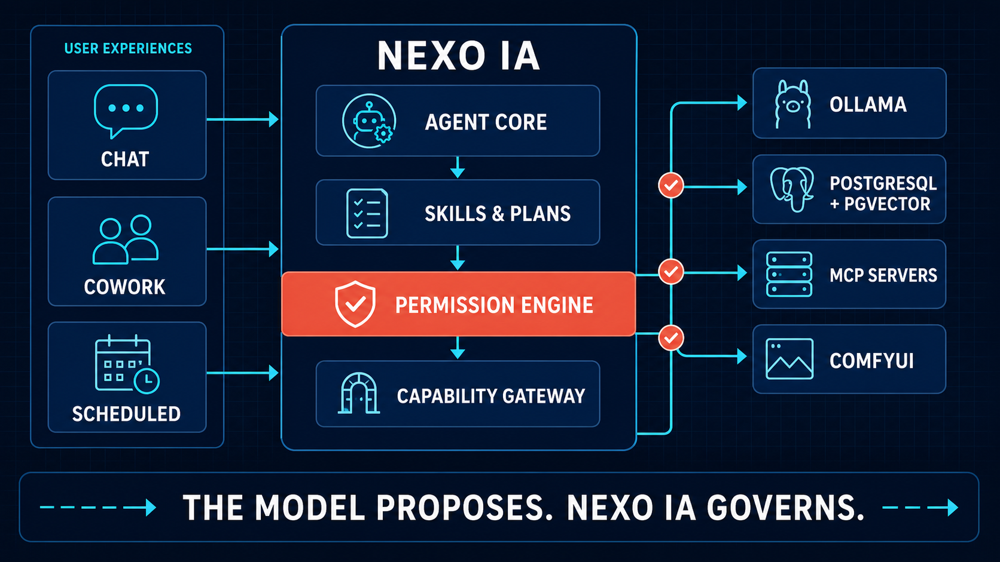

Midnight Core
Structure, privacy, reliability, and the local environment that contains the system.
Nexo IA is a private, extensible assistant designed to teach how modern AI systems work—from local LLMs and RAG to tools, permissions, MCP, Cowork, and autonomous scheduled tasks.
The abstract N joins multiple capabilities through visible paths. The coral center marks the decision point: the model may propose, but the user and deterministic policy remain in control.
“Nexo” means a link, relationship, or point of connection. The name describes the product's role: connecting a person to models, knowledge, projects, tools, and external capabilities without taking control away from them. “IA” makes its artificial-intelligence purpose explicit in Portuguese and preserves the creator's identity.
The outer structure forms the initial of Nexo. It is intentionally built from paths instead of a solid letter, expressing movement between context, reasoning, decisions, and action.
Each node represents a capability in the ecosystem: local LLMs, RAG, Skills, memory, MCP, workspaces, automations, or image generation. Together they form one system rather than isolated AI features.
The central coral node represents the user and the Permission Engine. Connections may cross the system, but consequential actions meet an explicit point of policy, scope, consent, and accountability.
The symbol translates the product principle into one image: the model connects possibilities; Nexo IA turns them into governed, visible, and verifiable action.
#06143A#05CCE8#FF654A#F4FBFDStructure, privacy, reliability, and the local environment that contains the system.
Knowledge flow, model output, tools, links, and active technical capabilities.
Human approval, critical status, intentional action, and visible control points.
Clarity, readable information, calm contrast, and transparent explanations.
A modular Java core keeps product rules independent from providers and transports. Every real-world effect crosses one permission boundary and produces inspectable evidence.

Nexo IA starts as one modular application. Packages prove their boundaries before becoming build modules, services, or distributed infrastructure.
Both are LTS releases. Java 25 is the current LTS for this new project and carries four releases of finalized improvements, while Nexo IA keeps preview features disabled.
Java 24 removed the previous synchronized pinning limitation. Scoped Values are final in Java 25 for bounded immutable context. Structured Concurrency remains preview and stays out.
Stream Gatherers, the Foreign Function and Memory API, and the Class-File API are final. They remain targeted tools, not automatic dependencies.
GC, AOT, compact object headers, and JFR evolved. Each optimization still requires a Nexo IA benchmark before adoption.
Unnamed variables, flexible constructor bodies, module imports, compact programs, and Markdown documentation arrived after Java 21.
Security Manager is permanently disabled. Tool safety comes from permissions, canonical scopes, process boundaries, OS controls, timeouts, and audit.
A newer JDK does not accelerate inference automatically. Nexo IA adopts a Java 25 feature only when it solves a demonstrated problem.
Questions, explanations, brainstorming, and read-only exploration.
Requirements, constraints, steps, risks, and definition of done—without implementation effects.
Scoped implementation with diffs, approval, testing, and verifiable results.
Evidence-backed findings prioritized by impact, without changing the target by default.
A durable objective with collaborative plans, checkpoints, artifacts, and multiple agent runs.
Unattended work with pre-authorized scope, isolated runs, limits, history, and notifications.
Capabilities arrive in measurable phases. Every feature must be demonstrated, tested, explained, and observable—not merely appear to work.
Your knowledge.
Your tools.
Your control.